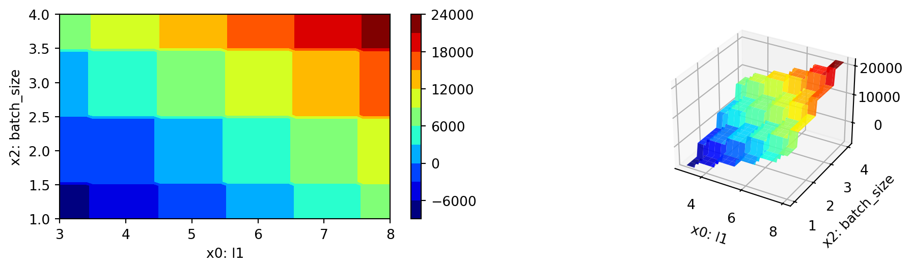
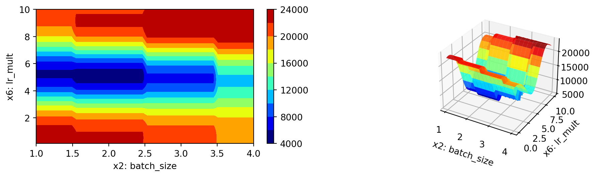

import sys
sys.path.insert(0, './userModel')
import my_regressor
import my_hyper_dict
from spotpython.hyperparameters.values import add_core_model_to_fun_control
from spotpython.data.diabetes import Diabetes
from spotpython.hyperdict.light_hyper_dict import LightHyperDict
from spotpython.fun.hyperlight import HyperLight
from spotpython.utils.init import (fun_control_init, design_control_init)
from spotpython.utils.eda import gen_design_table
from spotpython.hyperparameters.values import set_hyperparameter
from spotpython.spot import spot
fun_control = fun_control_init(
PREFIX="601-user-model",
fun_evals=inf,
max_time=1,
data_set = Diabetes(),
_L_in=10,
_L_out=1)
add_core_model_to_fun_control(fun_control=fun_control,
core_model=my_regressor.MyRegressor,
hyper_dict=my_hyper_dict.MyHyperDict)
design_control = design_control_init(init_size=7)
fun = HyperLight().fun
spot_tuner = spot.Spot(fun=fun,fun_control=fun_control, design_control=design_control)28 Hyperparameter Tuning with PyTorch Lightning and User Models
In this section, we will show how a user defined model can be used for the PyTorch Lightning hyperparameter tuning workflow with spotpython.
28.1 Using a User Specified Model
As templates, we provide the following three files that allow the user to specify a model in the /userModel directory:
my_regressor.py, see Section 28.2.4my_hyperdict.json, see Section 28.2.3my_hyperdict.py, see Section 28.2.2.
The my_regressor.py file contains the model class, which is a subclass of nn.Module. The my_hyperdict.json file contains the hyperparameter settings as a dictionary, which are loaded via the my_hyperdict.py file.
Note, that we have to add the path to the userModel directory to the sys.path list as shown below.
res = spot_tuner.run()
print(gen_design_table(fun_control=fun_control, spot=spot_tuner))
spot_tuner.plot_important_hyperparameter_contour(max_imp=3)train_model result: {'val_loss': nan, 'hp_metric': nan}train_model result: {'val_loss': 4795.224609375, 'hp_metric': 4795.224609375}train_model result: {'val_loss': 19881.609375, 'hp_metric': 19881.609375}train_model result: {'val_loss': nan, 'hp_metric': nan}train_model result: {'val_loss': 22673.50390625, 'hp_metric': 22673.50390625}train_model result: {'val_loss': 23567.240234375, 'hp_metric': 23567.240234375}train_model result: {'val_loss': 4636.91552734375, 'hp_metric': 4636.91552734375}
spotpython tuning: 4636.91552734375 [#---------] 10.95% train_model result: {'val_loss': 20895.22265625, 'hp_metric': 20895.22265625}
spotpython tuning: 4636.91552734375 [##########] 100.00% Done...
| name | type | default | lower | upper | tuned | transform | importance | stars |
|----------------|--------|-----------|---------|---------|---------------------|-----------------------|--------------|---------|
| l1 | int | 3 | 3.0 | 8.0 | 4.0 | transform_power_2_int | 100.00 | *** |
| epochs | int | 4 | 4.0 | 9.0 | 7.0 | transform_power_2_int | 100.00 | *** |
| batch_size | int | 4 | 1.0 | 4.0 | 2.0 | transform_power_2_int | 100.00 | *** |
| act_fn | factor | ReLU | 0.0 | 5.0 | Swish | None | 100.00 | *** |
| optimizer | factor | SGD | 0.0 | 11.0 | Adagrad | None | 100.00 | *** |
| dropout_prob | float | 0.01 | 0.0 | 0.25 | 0.08633126164944027 | None | 100.00 | *** |
| lr_mult | float | 1.0 | 0.1 | 10.0 | 5.496437531342211 | None | 100.00 | *** |
| patience | int | 2 | 2.0 | 6.0 | 3.0 | transform_power_2_int | 100.00 | *** |
| initialization | factor | Default | 0.0 | 4.0 | kaiming_normal | None | 100.00 | *** |
l1: 100.0
epochs: 100.0
batch_size: 100.0
act_fn: 100.0
optimizer: 100.0
dropout_prob: 100.0
lr_mult: 100.0
patience: 100.0
initialization: 100.0
impo: [['l1', 100.0], ['epochs', 100.0], ['batch_size', 100.0], ['act_fn', 100.0], ['optimizer', 100.0], ['dropout_prob', 100.0], ['lr_mult', 100.0], ['patience', 100.0], ['initialization', 100.0]]
indices: [0, 1, 2, 3, 4, 5, 6, 7, 8]
indices after max_imp selection: [0, 1, 2]


28.2 Details
28.2.1 Model Setup
By using core_model_name = "my_regressor.MyRegressor", the user specified model class MyRegressor [SOURCE] is selected. For this given core_model_name, the local hyper_dict is loaded using the my_hyper_dict.py file as shown below.
28.2.2 The my_hyper_dict.py File
The my_hyper_dict.py file must be placed in the /userModel directory. It provides a convenience function to load the hyperparameters from user specified the my_hyper_dict.json file, see Section 28.2.2. The user does not need to modify this file, if the JSON file is stored as my_hyper_dict.json. Alternative filenames can be specified via the filename argument (which is default set to "my_hyper_dict.json").
28.2.3 The my_hyper_dict.json File
The my_hyper_dict.json file contains the hyperparameter settings as a dictionary, which are loaded via the my_hyper_dict.py file. The example below shows the content of the my_hyper_dict.json file.
{
"MyRegressor": {
"l1": {
"type": "int",
"default": 3,
"transform": "transform_power_2_int",
"lower": 3,
"upper": 8
},
"epochs": {
"type": "int",
"default": 4,
"transform": "transform_power_2_int",
"lower": 4,
"upper": 9
},
"batch_size": {
"type": "int",
"default": 4,
"transform": "transform_power_2_int",
"lower": 1,
"upper": 4
},
"act_fn": {
"levels": [
"Sigmoid",
"Tanh",
"ReLU",
"LeakyReLU",
"ELU",
"Swish"
],
"type": "factor",
"default": "ReLU",
"transform": "None",
"class_name": "spotpython.torch.activation",
"core_model_parameter_type": "instance()",
"lower": 0,
"upper": 5
},
"optimizer": {
"levels": [
"Adadelta",
"Adagrad",
"Adam",
"AdamW",
"SparseAdam",
"Adamax",
"ASGD",
"NAdam",
"RAdam",
"RMSprop",
"Rprop",
"SGD"
],
"type": "factor",
"default": "SGD",
"transform": "None",
"class_name": "torch.optim",
"core_model_parameter_type": "str",
"lower": 0,
"upper": 11
},
"dropout_prob": {
"type": "float",
"default": 0.01,
"transform": "None",
"lower": 0.0,
"upper": 0.25
},
"lr_mult": {
"type": "float",
"default": 1.0,
"transform": "None",
"lower": 0.1,
"upper": 10.0
},
"patience": {
"type": "int",
"default": 2,
"transform": "transform_power_2_int",
"lower": 2,
"upper": 6
},
"initialization": {
"levels": [
"Default",
"Kaiming",
"Xavier"
],
"type": "factor",
"default": "Default",
"transform": "None",
"core_model_parameter_type": "str",
"lower": 0,
"upper": 2
}
}
}28.2.4 The my_regressor.py File
The my_regressor.py file contains [SOURCE] the model class, which is a subclass of nn.Module. It must implement the following methods:
__init__(self, **kwargs): The constructor of the model class. The hyperparameters are passed as keyword arguments.forward(self, x: torch.Tensor) -> torch.Tensor: The forward pass of the model. The inputxis passed through the model and the output is returned.training_step(self, batch, batch_idx) -> torch.Tensor: The training step of the model. It takes a batch of data and the batch index as input and returns the loss.validation_step(self, batch, batch_idx) -> torch.Tensor: The validation step of the model. It takes a batch of data and the batch index as input and returns the loss.test_step(self, batch, batch_idx) -> torch.Tensor: The test step of the model. It takes a batch of data and the batch index as input and returns the loss.predict(self, x: torch.Tensor) -> torch.Tensor: The prediction method of the model. It takes an inputxand returns the prediction.configure_optimizers(self) -> torch.optim.Optimizer: The method to configure the optimizer of the model. It returns the optimizer.
The file my_regressor.py must be placed in the /userModel directory. The user can modify the model class to implement a custom model architecture.
We will take a closer look at the methods defined in the my_regressor.py file in the next subsections.
28.2.4.1 The __init__ Method
__init__() initializes the MyRegressor object. It takes the following arguments:
l1(int): The number of neurons in the first hidden layer.epochs(int): The number of epochs to train the model for.batch_size(int): The batch size to use during training.initialization(str): The initialization method to use for the weights.act_fn(nn.Module): The activation function to use in the hidden layers.optimizer(str): The optimizer to use during training.dropout_prob(float): The probability of dropping out a neuron during training.lr_mult(float): The learning rate multiplier for the optimizer.patience(int): The number of epochs to wait before early stopping._L_in(int): The number of input features. Not a hyperparameter, but needed to create the network._L_out(int): The number of output classes. Not a hyperparameter, but needed to create the network._torchmetric(str): The metric to use for the loss function. IfNone, then “mean_squared_error” is used.
It is implemented as follows:
class MyRegressor(L.LightningModule):
def __init__(
self,
l1: int,
epochs: int,
batch_size: int,
initialization: str,
act_fn: nn.Module,
optimizer: str,
dropout_prob: float,
lr_mult: float,
patience: int,
_L_in: int,
_L_out: int,
_torchmetric: str,
):
super().__init__()
self._L_in = _L_in
self._L_out = _L_out
if _torchmetric is None:
_torchmetric = "mean_squared_error"
self._torchmetric = _torchmetric
self.metric = getattr(torchmetrics.functional.regression, _torchmetric)
# _L_in and _L_out are not hyperparameters, but are needed to create the network
# _torchmetric is not a hyperparameter, but is needed to calculate the loss
self.save_hyperparameters(ignore=["_L_in", "_L_out", "_torchmetric"])
# set dummy input array for Tensorboard Graphs
# set log_graph=True in Trainer to see the graph (in traintest.py)
self.example_input_array = torch.zeros((batch_size, self._L_in))
if self.hparams.l1 < 4:
raise ValueError("l1 must be at least 4")
hidden_sizes = self._get_hidden_sizes()
# Create the network based on the specified hidden sizes
layers = []
layer_sizes = [self._L_in] + hidden_sizes
layer_size_last = layer_sizes[0]
for layer_size in layer_sizes[1:]:
layers += [
nn.Linear(layer_size_last, layer_size),
self.hparams.act_fn,
nn.Dropout(self.hparams.dropout_prob),
]
layer_size_last = layer_size
layers += [nn.Linear(layer_sizes[-1], self._L_out)]
# nn.Sequential summarizes a list of modules into a single module,
# applying them in sequence
self.layers = nn.Sequential(*layers)28.2.4.3 The forward Method
The forward() method defines the forward pass of the model. It takes an input tensor x and passes it through the network layers to produce an output tensor. It is implemented as follows:
def forward(self, x: torch.Tensor) -> torch.Tensor:
return self.layers(x)28.2.4.4 The _calculate_loss Method
The _calculate_loss() method calculates the loss based on the predicted output and the target values. It uses the specified metric to calculate the loss. It takes the following arguments:
batch (tuple): A tuple containing a batch of input data and labels.
It is implemented as follows:
def _calculate_loss(self, batch):
x, y = batch
y = y.view(len(y), 1)
y_hat = self(x)
loss = self.metric(y_hat, y)
return loss28.2.4.5 The training_step Method
The training_step() method defines the training step of the model. It takes a batch of data and returns the loss. It is implemented as follows:
def training_step(self, batch: tuple) -> torch.Tensor:
val_loss = self._calculate_loss(batch)
return val_loss28.2.4.6 The validation_step Method
The validation_step() method defines the validation step of the model. It takes a batch of data and returns the loss. It is implemented as follows:
def validation_step(self, batch: tuple) -> torch.Tensor:
val_loss = self._calculate_loss(batch)
return val_loss28.2.4.7 The test_step Method
The test_step() method defines the test step of the model. It takes a batch of data and returns the loss. It is implemented as follows:
def test_step(self, batch: tuple) -> torch.Tensor:
val_loss = self._calculate_loss(batch)
return val_loss28.2.4.8 The predict Method
The predict() method defines the prediction method of the model. It takes an input tensor x and returns a tuple with the input tensor x, the target tensor y, and the predicted tensor y_hat.
It is implemented as follows:
def predict(self, x: torch.Tensor) -> torch.Tensor:
x, y = batch
yhat = self(x)
y = y.view(len(y), 1)
yhat = yhat.view(len(yhat), 1)
return (x, y, yhat)28.2.4.9 The configure_optimizers Method
The configure_optimizers() method defines the optimizer to use during training. It uses the optimizer_handler from spotpython.hyperparameter.optimizer to create the optimizer based on the specified optimizer name, parameters, and learning rate multiplier. It is implemented as follows:
def configure_optimizers(self) -> torch.optim.Optimizer:
optimizer = optimizer_handler(
optimizer_name=self.hparams.optimizer, params=self.parameters(), lr_mult=self.hparams.lr_mult
)
return optimizerNote, the default Lightning way is to define an optimizer as optimizer = torch.optim.Adam(self.parameters(), lr=self.learning_rate). spotpython uses an optimizer handler to create the optimizer, which adapts the learning rate according to the lr_mult hyperparameter as well as other hyperparameters. See spotpython.hyperparameters.optimizer.py [SOURCE] for details.
28.3 Connection with the LightDataModule
The steps described in Section 28.2.4 are connected to the LightDataModule class [DOC]. This class is used to create the data loaders for the training, validation, and test sets. The LightDataModule class is part of the spotpython package and class provides the following methods [SOURCE]:
prepare_data(): This method is used to prepare the data set.setup(): This method is used to create the data loaders for the training, validation, and test sets.train_dataloader(): This method is used to return the data loader for the training set.val_dataloader(): This method is used to return the data loader for the validation set.test_dataloader(): This method is used to return the data loader for the test set.predict_dataloader(): This method is used to return the data loader for the prediction set.
28.3.1 The prepare_data() Method
The prepare_data() method is used to prepare the data set. This method is called only once and on a single process. It can be used to download the data set. In our case, the data set is already available, so this method uses a simple pass statement.
28.3.2 The setup() Method
The stage is used to define the data set to be returned. It can be None, fit, test, or predict. If stage is None, the method returns the training (fit), testing (test), and prediction (predict) data sets.
The setup methods splits the data based on the stage setting for use in training, validation, and testing. It uses torch.utils.data.random_split() to split the data.
Splitting is based on the test_size and test_seed. The test_size can be a float or an int.
First, the data set sizes are determined as described in Section 28.3.2.1. Then, the data sets are split based on the stage setting. spotpython’s LightDataModule class uses the following sizes:
full_train_size: The size of the full training data set. This data set is splitted into the final training data set and a validation data set.val_size: The size of the validation data set. The validation data set is used to validate the model during training.train_size: The size of the training data set. The training data set is used to train the model.test_size: The size of the test data set. The test data set is used to evaluate the model after training. It is not used during training (“hyperparameter tuning”). Only after everything is finished, the model is evaluated on the test data set.
28.3.2.1 Determine the Sizes of the Data Sets
import torch
from torch.utils.data import random_split
data_full = Diabetes()
test_size = fun_control["test_size"]
test_seed=fun_control["test_seed"]
# if test_size is float, then train_size is 1 - test_size
if isinstance(test_size, float):
full_train_size = round(1.0 - test_size, 2)
val_size = round(full_train_size * test_size, 2)
train_size = round(full_train_size - val_size, 2)
else:
# if test_size is int, then train_size is len(data_full) - test_size
full_train_size = len(data_full) - test_size
val_size = int(full_train_size * test_size / len(data_full))
train_size = full_train_size - val_size
print(f"LightDataModule setup(): full_train_size: {full_train_size}")
print(f"LightDataModule setup(): val_size: {val_size}")
print(f"LightDataModule setup(): train_size: {train_size}")
print(f"LightDataModule setup(): test_size: {test_size}")LightDataModule setup(): full_train_size: 0.6
LightDataModule setup(): val_size: 0.24
LightDataModule setup(): train_size: 0.36
LightDataModule setup(): test_size: 0.428.3.2.2 The “setup” Method: Stage “fit”
Here, train_size and val_size are used to split the data into training and validation sets.
stage = "fit"
scaler = None
# Assign train/val datasets for use in dataloaders
if stage == "fit" or stage is None:
print(f"train_size: {train_size}, val_size: {val_size} used for train & val data.")
generator_fit = torch.Generator().manual_seed(test_seed)
data_train, data_val, _ = random_split(
data_full, [train_size, val_size, test_size], generator=generator_fit
)
if scaler is not None:
# Fit the scaler on training data and transform both train and val data
scaler_train_data = torch.stack([data_train[i][0] for i in range(len(data_train))]).squeeze(1)
# train_val_data = data_train[:,0]
print(scaler_train_data.shape)
scaler.fit(scaler_train_data)
data_train = [(scaler.transform(data), target) for data, target in data_train]
data_tensors_train = [data.clone().detach() for data, target in data_train]
target_tensors_train = [target.clone().detach() for data, target in data_train]
data_train = TensorDataset(
torch.stack(data_tensors_train).squeeze(1), torch.stack(target_tensors_train)
)
# print(data_train)
data_val = [(scaler.transform(data), target) for data, target in data_val]
data_tensors_val = [data.clone().detach() for data, target in data_val]
target_tensors_val = [target.clone().detach() for data, target in data_val]
data_val = TensorDataset(torch.stack(data_tensors_val).squeeze(1), torch.stack(target_tensors_val))train_size: 0.36, val_size: 0.24 used for train & val data.The data_train and data_val data sets are further used to create the training and validation data loaders as described in Section 28.3.3 and Section 28.3.4, respectively.
28.3.2.3 The “setup” Method: Stage “test”
Here, the test data set, which is based on the test_size, is created.
stage = "test"
# Assign test dataset for use in dataloader(s)
if stage == "test" or stage is None:
print(f"test_size: {test_size} used for test dataset.")
# get test data set as test_abs percent of the full dataset
generator_test = torch.Generator().manual_seed(test_seed)
data_test, _ = random_split(data_full, [test_size, full_train_size], generator=generator_test)
if scaler is not None:
data_test = [(scaler.transform(data), target) for data, target in data_test]
data_tensors_test = [data.clone().detach() for data, target in data_test]
target_tensors_test = [target.clone().detach() for data, target in data_test]
data_test = TensorDataset(
torch.stack(data_tensors_test).squeeze(1), torch.stack(target_tensors_test)
)
print(f"LightDataModule setup(): Test set size: {len(data_test)}")
# Set batch size for DataLoader
batch_size = 5
# Create DataLoader
from torch.utils.data import DataLoader
dataloader = DataLoader(data_test, batch_size=batch_size, shuffle=False)
# Iterate over the data in the DataLoader
for batch in dataloader:
inputs, targets = batch
print(f"Batch Size: {inputs.size(0)}")
print(f"Inputs Shape: {inputs.shape}")
print(f"Targets Shape: {targets.shape}")
print("---------------")
print(f"Inputs: {inputs}")
print(f"Targets: {targets}")
breaktest_size: 0.4 used for test dataset.
LightDataModule setup(): Test set size: 177
Batch Size: 5
Inputs Shape: torch.Size([5, 10])
Targets Shape: torch.Size([5])
---------------
Inputs: tensor([[ 0.0490, -0.0446, -0.0418, 0.1045, 0.0356, -0.0257, 0.1775, -0.0764,
-0.0129, 0.0155],
[-0.0273, 0.0507, -0.0159, -0.0298, 0.0039, -0.0007, 0.0413, -0.0395,
-0.0236, 0.0113],
[ 0.0708, 0.0507, -0.0170, 0.0219, 0.0438, 0.0563, 0.0376, -0.0026,
-0.0702, -0.0176],
[-0.0382, 0.0507, 0.0714, -0.0573, 0.1539, 0.1559, 0.0008, 0.0719,
0.0503, 0.0693],
[ 0.0453, -0.0446, 0.0391, 0.0460, 0.0067, -0.0242, 0.0081, -0.0126,
0.0643, 0.0569]])
Targets: tensor([103., 53., 80., 220., 246.])28.3.2.4 The “setup” Method: Stage “predict”
Prediction and testing use the same data set. The prediction data set is created based on the test_size.
stage = "predict"
if stage == "predict" or stage is None:
print(f"test_size: {test_size} used for predict dataset.")
# get test data set as test_abs percent of the full dataset
generator_predict = torch.Generator().manual_seed(test_seed)
data_predict, _ = random_split(
data_full, [test_size, full_train_size], generator=generator_predict
)
if scaler is not None:
data_predict = [(scaler.transform(data), target) for data, target in data_predict]
data_tensors_predict = [data.clone().detach() for data, target in data_predict]
target_tensors_predict = [target.clone().detach() for data, target in data_predict]
data_predict = TensorDataset(
torch.stack(data_tensors_predict).squeeze(1), torch.stack(target_tensors_predict)
)
print(f"LightDataModule setup(): Predict set size: {len(data_predict)}")
# Set batch size for DataLoader
batch_size = 5
# Create DataLoader
from torch.utils.data import DataLoader
dataloader = DataLoader(data_predict, batch_size=batch_size, shuffle=False)
# Iterate over the data in the DataLoader
for batch in dataloader:
inputs, targets = batch
print(f"Batch Size: {inputs.size(0)}")
print(f"Inputs Shape: {inputs.shape}")
print(f"Targets Shape: {targets.shape}")
print("---------------")
print(f"Inputs: {inputs}")
print(f"Targets: {targets}")
breaktest_size: 0.4 used for predict dataset.
LightDataModule setup(): Predict set size: 177
Batch Size: 5
Inputs Shape: torch.Size([5, 10])
Targets Shape: torch.Size([5])
---------------
Inputs: tensor([[ 0.0490, -0.0446, -0.0418, 0.1045, 0.0356, -0.0257, 0.1775, -0.0764,
-0.0129, 0.0155],
[-0.0273, 0.0507, -0.0159, -0.0298, 0.0039, -0.0007, 0.0413, -0.0395,
-0.0236, 0.0113],
[ 0.0708, 0.0507, -0.0170, 0.0219, 0.0438, 0.0563, 0.0376, -0.0026,
-0.0702, -0.0176],
[-0.0382, 0.0507, 0.0714, -0.0573, 0.1539, 0.1559, 0.0008, 0.0719,
0.0503, 0.0693],
[ 0.0453, -0.0446, 0.0391, 0.0460, 0.0067, -0.0242, 0.0081, -0.0126,
0.0643, 0.0569]])
Targets: tensor([103., 53., 80., 220., 246.])28.3.3 The train_dataloader() Method
The method `train_dataloader returns the training dataloader, i.e., a Pytorch DataLoader instance using the training dataset. It simply returns a DataLoader with the data_train set that was created in the setup() method as described in Section 28.3.2.2.
def train_dataloader(self) -> DataLoader:
return DataLoader(data_train, batch_size=batch_size, num_workers=num_workers)
Using the
train_dataloader() Method
The train_dataloader() method can be used as follows:
from spotpython.data.lightdatamodule import LightDataModule
from spotpython.data.diabetes import Diabetes
dataset = Diabetes(target_type=torch.float)
data_module = LightDataModule(dataset=dataset, batch_size=5, test_size=0.4)
data_module.setup()
print(f"Training set size: {len(data_module.data_train)}")
dl = data_module.train_dataloader()
# Iterate over the data in the DataLoader
for batch in dl:
inputs, targets = batch
print(f"Batch Size: {inputs.size(0)}")
print(f"Inputs Shape: {inputs.shape}")
print(f"Targets Shape: {targets.shape}")
print("---------------")
print(f"Inputs: {inputs}")
print(f"Targets: {targets}")
breakTraining set size: 160
Batch Size: 5
Inputs Shape: torch.Size([5, 10])
Targets Shape: torch.Size([5])
---------------
Inputs: tensor([[ 0.0562, -0.0446, -0.0579, -0.0080, 0.0521, 0.0491, 0.0560, -0.0214,
-0.0283, 0.0445],
[ 0.0018, -0.0446, -0.0709, -0.0229, -0.0016, -0.0010, 0.0266, -0.0395,
-0.0225, 0.0072],
[-0.0527, -0.0446, 0.0542, -0.0263, -0.0552, -0.0339, -0.0139, -0.0395,
-0.0741, -0.0591],
[ 0.0054, -0.0446, -0.0482, -0.0126, 0.0012, -0.0066, 0.0634, -0.0395,
-0.0514, -0.0591],
[-0.0527, -0.0446, -0.0094, -0.0057, 0.0397, 0.0447, 0.0266, -0.0026,
-0.0181, -0.0135]])
Targets: tensor([158., 49., 142., 96., 59.])28.3.4 The val_dataloader() Method
Returns the validation dataloader, i.e., a Pytorch DataLoader instance using the validation dataset. It simply returns a DataLoader with the data_val set that was created in the setup() method as desccribed in Section 28.3.2.2.
def val_dataloader(self) -> DataLoader:
return DataLoader(data_val, batch_size=batch_size, num_workers=num_workers)
Using the
val_dataloader() Method
The val_dataloader() method can be used as follows:
from spotpython.data.lightdatamodule import LightDataModule
from spotpython.data.diabetes import Diabetes
dataset = Diabetes(target_type=torch.float)
data_module = LightDataModule(dataset=dataset, batch_size=5, test_size=0.4)
data_module.setup()
print(f"Validation set size: {len(data_module.data_val)}")
dl = data_module.val_dataloader()
# Iterate over the data in the DataLoader
for batch in dl:
inputs, targets = batch
print(f"Batch Size: {inputs.size(0)}")
print(f"Inputs Shape: {inputs.shape}")
print(f"Targets Shape: {targets.shape}")
print("---------------")
print(f"Inputs: {inputs}")
print(f"Targets: {targets}")
breakValidation set size: 106
Batch Size: 5
Inputs Shape: torch.Size([5, 10])
Targets Shape: torch.Size([5])
---------------
Inputs: tensor([[ 0.0163, -0.0446, 0.0736, -0.0412, -0.0043, -0.0135, -0.0139, -0.0011,
0.0429, 0.0445],
[ 0.0453, -0.0446, 0.0714, 0.0012, -0.0098, -0.0010, 0.0155, -0.0395,
-0.0412, -0.0715],
[ 0.0308, 0.0507, 0.0326, 0.0494, -0.0401, -0.0436, -0.0692, 0.0343,
0.0630, 0.0031],
[ 0.0235, 0.0507, -0.0396, -0.0057, -0.0484, -0.0333, 0.0118, -0.0395,
-0.1016, -0.0674],
[-0.0091, 0.0507, 0.0013, -0.0022, 0.0796, 0.0701, 0.0339, -0.0026,
0.0267, 0.0818]])
Targets: tensor([275., 141., 208., 78., 142.])28.3.5 The test_dataloader() Method
Returns the test dataloader, i.e., a Pytorch DataLoader instance using the test dataset. It simply returns a DataLoader with the data_test set that was created in the setup() method as described in Section 25.4.2.3.
def test_dataloader(self) -> DataLoader:
return DataLoader(data_test, batch_size=batch_size, num_workers=num_workers)
Using the
test_dataloader() Method
The test_dataloader() method can be used as follows:
from spotpython.data.lightdatamodule import LightDataModule
from spotpython.data.diabetes import Diabetes
dataset = Diabetes(target_type=torch.float)
data_module = LightDataModule(dataset=dataset, batch_size=5, test_size=0.4)
data_module.setup()
print(f"Test set size: {len(data_module.data_test)}")
dl = data_module.test_dataloader()
# Iterate over the data in the DataLoader
for batch in dl:
inputs, targets = batch
print(f"Batch Size: {inputs.size(0)}")
print(f"Inputs Shape: {inputs.shape}")
print(f"Targets Shape: {targets.shape}")
print("---------------")
print(f"Inputs: {inputs}")
print(f"Targets: {targets}")
breakTest set size: 177
Batch Size: 5
Inputs Shape: torch.Size([5, 10])
Targets Shape: torch.Size([5])
---------------
Inputs: tensor([[ 0.0562, -0.0446, -0.0579, -0.0080, 0.0521, 0.0491, 0.0560, -0.0214,
-0.0283, 0.0445],
[ 0.0018, -0.0446, -0.0709, -0.0229, -0.0016, -0.0010, 0.0266, -0.0395,
-0.0225, 0.0072],
[-0.0527, -0.0446, 0.0542, -0.0263, -0.0552, -0.0339, -0.0139, -0.0395,
-0.0741, -0.0591],
[ 0.0054, -0.0446, -0.0482, -0.0126, 0.0012, -0.0066, 0.0634, -0.0395,
-0.0514, -0.0591],
[-0.0527, -0.0446, -0.0094, -0.0057, 0.0397, 0.0447, 0.0266, -0.0026,
-0.0181, -0.0135]])
Targets: tensor([158., 49., 142., 96., 59.])28.3.6 The predict_dataloader() Method
Returns the prediction dataloader, i.e., a Pytorch DataLoader instance using the prediction dataset. It simply returns a DataLoader with the data_predict set that was created in the setup() method as described in Section 25.4.2.4.
Warning
The batch_size is set to the length of the data_predict set.
def predict_dataloader(self) -> DataLoader:
return DataLoader(data_predict, batch_size=len(data_predict), num_workers=num_workers)
Using the
predict_dataloader() Method
The predict_dataloader() method can be used as follows:
from spotpython.data.lightdatamodule import LightDataModule
from spotpython.data.diabetes import Diabetes
dataset = Diabetes(target_type=torch.float)
data_module = LightDataModule(dataset=dataset, batch_size=5, test_size=0.4)
data_module.setup()
print(f"Test set size: {len(data_module.data_predict)}")
dl = data_module.predict_dataloader()
# Iterate over the data in the DataLoader
for batch in dl:
inputs, targets = batch
print(f"Batch Size: {inputs.size(0)}")
print(f"Inputs Shape: {inputs.shape}")
print(f"Targets Shape: {targets.shape}")
print("---------------")
print(f"Inputs: {inputs}")
print(f"Targets: {targets}")
breakTest set size: 177
Batch Size: 177
Inputs Shape: torch.Size([177, 10])
Targets Shape: torch.Size([177])
---------------
Inputs: tensor([[ 0.0562, -0.0446, -0.0579, ..., -0.0214, -0.0283, 0.0445],
[ 0.0018, -0.0446, -0.0709, ..., -0.0395, -0.0225, 0.0072],
[-0.0527, -0.0446, 0.0542, ..., -0.0395, -0.0741, -0.0591],
...,
[ 0.0090, -0.0446, -0.0321, ..., -0.0764, -0.0119, -0.0384],
[-0.0273, -0.0446, -0.0666, ..., -0.0395, -0.0358, -0.0094],
[ 0.0817, 0.0507, 0.0067, ..., 0.0919, 0.0547, 0.0072]])
Targets: tensor([158., 49., 142., 96., 59., 74., 137., 136., 39., 66., 310., 198.,
235., 116., 55., 177., 59., 246., 53., 135., 88., 198., 186., 217.,
51., 118., 153., 180., 51., 229., 84., 72., 237., 142., 185., 91.,
88., 148., 179., 144., 25., 89., 42., 60., 124., 170., 215., 263.,
178., 245., 202., 97., 321., 71., 123., 220., 132., 243., 61., 102.,
187., 70., 242., 134., 63., 72., 88., 219., 127., 146., 122., 143.,
220., 293., 59., 317., 60., 140., 65., 277., 90., 96., 109., 190.,
90., 52., 160., 233., 230., 175., 68., 272., 144., 70., 68., 163.,
71., 93., 263., 118., 220., 90., 232., 120., 163., 88., 85., 52.,
181., 232., 212., 332., 81., 214., 145., 268., 115., 93., 64., 156.,
128., 200., 281., 103., 220., 66., 48., 246., 42., 150., 125., 109.,
129., 97., 265., 97., 173., 216., 237., 121., 42., 151., 31., 68.,
137., 221., 283., 124., 243., 150., 69., 306., 182., 252., 132., 258.,
121., 110., 292., 101., 275., 141., 208., 78., 142., 185., 167., 258.,
144., 89., 225., 140., 303., 236., 87., 77., 131.])28.4 Using the LightDataModule in the train_model() Method
The methods discussed so far are used in spotpython’s train_model() method [DOC] to train the model. It is implemented as follows [SOURCE].
First, a LightDataModule object is created and the setup() method is called.
dm = LightDataModule(
dataset=fun_control["data_set"],
batch_size=config["batch_size"],
num_workers=fun_control["num_workers"],
test_size=fun_control["test_size"],
test_seed=fun_control["test_seed"],
)
dm.setup()Then, the Trainer is initialized.
# Init trainer
trainer = L.Trainer(
default_root_dir=os.path.join(fun_control["CHECKPOINT_PATH"], config_id),
max_epochs=model.hparams.epochs,
accelerator=fun_control["accelerator"],
devices=fun_control["devices"],
logger=TensorBoardLogger(
save_dir=fun_control["TENSORBOARD_PATH"],
version=config_id,
default_hp_metric=True,
log_graph=fun_control["log_graph"],
),
callbacks=[
EarlyStopping(monitor="val_loss", patience=config["patience"], mode="min", strict=False, verbose=False)
],
enable_progress_bar=enable_progress_bar,
)Next, the fit() method is called to train the model.
# Pass the datamodule as arg to trainer.fit to override model hooks :)
trainer.fit(model=model, datamodule=dm)Finally, the validate() method is called to validate the model. The validate() method returns the validation loss.
# Test best model on validation and test set
result = trainer.validate(model=model, datamodule=dm)
# unlist the result (from a list of one dict)
result = result[0]
return result["val_loss"]28.5 The Last Connection: The HyperLight Class
The method train_model() is part of the HyperLight class [DOC]. It is called from spotpython as an objective function to train the model and return the validation loss.
The HyperLight class is implemented as follows [SOURCE].
class HyperLight:
def fun(self, X: np.ndarray, fun_control: dict = None) -> np.ndarray:
z_res = np.array([], dtype=float)
self.check_X_shape(X=X, fun_control=fun_control)
var_dict = assign_values(X, get_var_name(fun_control))
for config in generate_one_config_from_var_dict(var_dict, fun_control):
df_eval = train_model(config, fun_control)
z_val = fun_control["weights"] * df_eval
z_res = np.append(z_res, z_val)
return z_res28.6 Further Information
28.6.1 Preprocessing
Preprocessing is handled by Lightning and PyTorch. It is described in the LIGHTNINGDATAMODULE documentation. Here you can find information about the transforms methods.